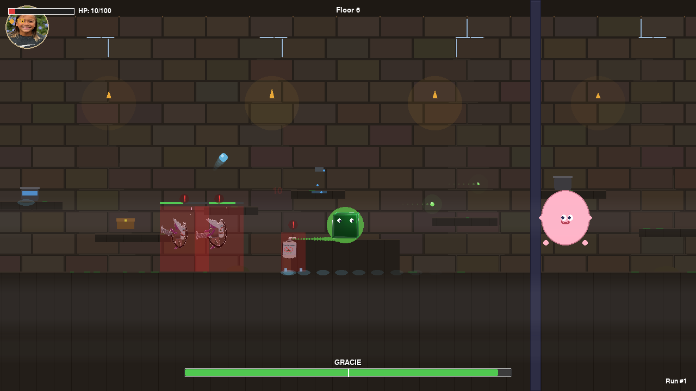
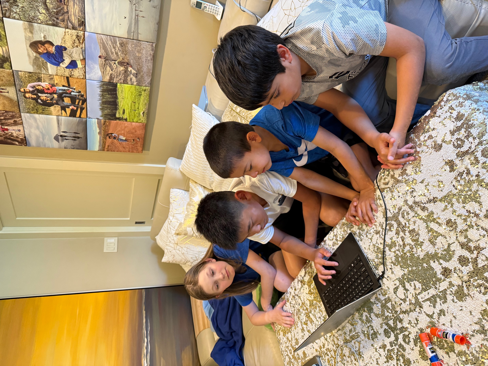
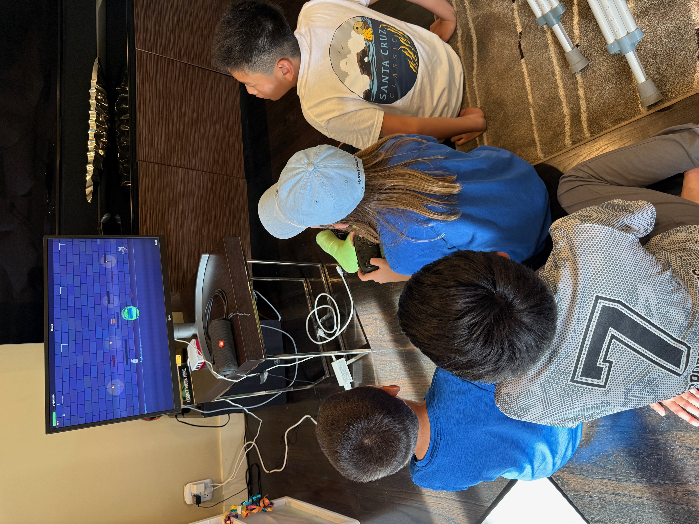
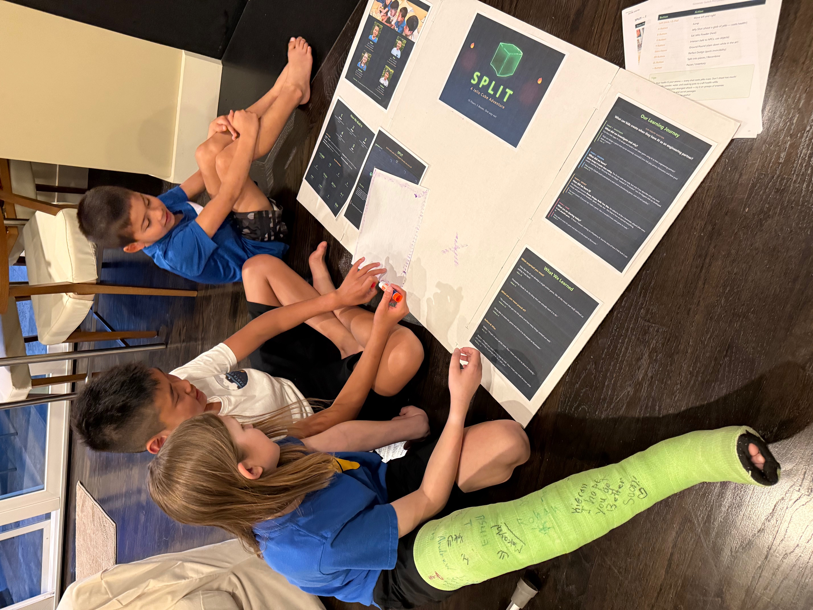
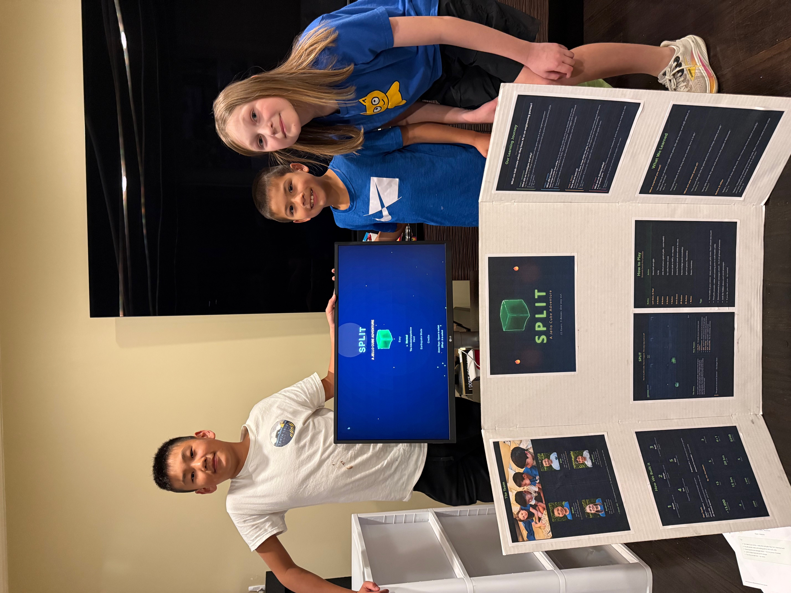
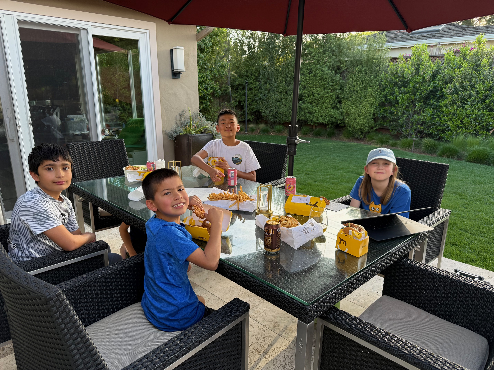

Quest Craft
Session Recaps
Sessions 1 through 5
Ethan (9) · Eins (12) · Nathan (9) · Andrew (12)
LASD Illuminate 2026
◆ ◆ ◆
Quest Craft
Session 1
Dream — Designing a Video Game with AI
February 28, 2026 | Ethan, Eins & Nathan
Today, three kids designed an entire video game from scratch.
No code. No templates. Just their ideas, their voices, and an AI engineering partner.
SPLIT
You're a jello cube. You're trapped. And the only way out is UP. Fight, split, and craft your way through a monster-filled castle — upgrading your skills floor by floor until you're strong enough to face what waits at the top. In Split, every piece of you matters.
What They Built Today
- Designed a complete game concept: characters, world, enemies, combat, items, crafting, and art direction
- Invented original game mechanics — a jello cube that shoots pieces of itself, splits apart to dodge attacks, and stores items visibly inside its transparent body
- Named the game, wrote the “back of the box” marketing copy, and prioritized features for a 2-week build
- Created an artist brief for their teammate Andrew with a clear creative assignment
- Saved everything to version control — three checkpoints committed and pushed to GitHub
- Spawned parallel AI sub-agents to research, design, and build a styled web page — orchestrating multiple AI workers like a project manager
- Watched the AI generate a fully playable game demo from their design — title screen, character physics, collectibles, and three combat mechanics (shoot, ground pound, split) — all in under 10 minutes
Skills Unlocked
VS Code + Remote SSH
Connected laptops to a Raspberry Pi 5 server — the same remote development workflow used by professional engineering teams
Git & GitHub
Learned commits as “save points,” wrote descriptive messages, pushed to a shared repo — version control fundamentals
AI Prompting (Claude Code)
Directed an AI to understand, organize, and document their ideas — the #1 skill in modern software development
AI Sub-Agents & Parallel Work
Learned how to spawn multiple AI “sub-agents” that work on different tasks simultaneously — one researching game themes, another designing page layouts, a third developing visual direction — then a team lead agent reviewing everything before delivery. This is how real AI-augmented engineering teams operate.
AI Models, Tokens & Costs
Discussed the difference between AI models (Opus, Sonnet, Haiku) — how larger models are more capable but cost more, how “tokens” are the unit of AI thinking, and how to choose the right model for the job. They saw real token counts and understood that every AI request has a computational cost.
Voice-to-Text (Wispr Flow)
Spoke naturally to communicate complex game ideas — learning that clear communication IS the skill, not typing
Markdown & Documentation
Saw how structured documents (PRDs, briefs) capture decisions — the same format used at every tech company
Web Publishing (GitHub Pages)
Set up free web hosting through GitHub Pages — pushed HTML files to a repo and they're instantly live on the internet
Remote Server Access
Ran a game on a headless Raspberry Pi server and viewed it remotely through a browser using VNC — the same remote infrastructure concept behind cloud gaming and server management
Game Design Fundamentals
Core loops, dynamic tension, scope prioritization, cohesive design, contextual tutorials — real design principles
Game Design Concepts
- Cohesive design — every mechanic ties back to being made of jello (shooting costs body mass, crafting uses jello ingredients, inventory floats inside you)
- Dynamic tension — the game breathes between peaceful exploration and intense combat, controlled by light and music
- Scope management — dreamed big (full castle, all bosses, hard mode) then identified the 3 must-haves for a 2-week build
- Risk/reward tradeoffs — growing bigger gives more health but blocks passages; splitting gives access but risks losing pieces
AI Engineering Concepts
- Sub-agent orchestration — instead of asking one AI to do everything sequentially, they learned to spawn 3 specialized agents working in parallel: one for research, one for design, one for content — then a “team lead” agent to review and integrate the results. This mirrors how real engineering teams divide and conquer.
- Model selection — discussed when to use powerful models (Opus for complex reasoning and code generation) vs. faster/cheaper models (Haiku for quick lookups) — the same cost-performance tradeoff that professional AI engineers make daily.
- Token awareness — every interaction with an AI consumes “tokens” (the units of text the AI reads and writes). They saw real token counts after each operation and understood that AI isn't magic — it has a measurable computational cost.
- Iterative feedback loops — the first version of the parent summary page looked generic. Instead of accepting it, the team directed a complete redesign — specifying the visual theme, reviewing the output, and iterating until it matched their game's identity. This “direct the AI, review, redirect” cycle is the core skill of AI-augmented work.
- Context window management — AI models can only “see” a limited amount of text at once (the “context window”). During the session, the team hit this limit and learned how the AI compresses earlier conversation to keep working. They experienced firsthand why concise, well-structured prompts matter.
- AI memory systems — AI doesn't remember anything between sessions by default. To solve this, the team built a persistent memory system: structured files that the AI reads at startup to recall past decisions, architecture choices, and lessons learned. This prevents the AI from “drifting” or contradicting earlier work, and means Session 2 picks up exactly where Session 1 left off.
How This Maps to LASD Illuminate: The Illuminate Inquiry Exhibition (March 27) asks students to explore a driving question through research, creativity, and real-world application. Quest Craft answers: “What can kids create when they have professional tools and an AI partner?” The kids are learning collaboration, iterative design, technical communication, and computational thinking — not by studying these concepts, but by doing them to ship a real product.
▶ Watch: The first playable moment of Split
Recorded live — the title screen and character demo generated from today's session
This is just the spark. The seed. But right now, they're playing a game that didn't exist 3 hours ago. They designed it.
◆ ◆ ◆
Quest Craft
Session 2
Design — The Deep Dive
March 8, 2026 | Ethan, Eins, Nathan & Andrew
From Concept to Complete Game Design in One Session
Today, Ethan, Eins, Nathan, and Andrew designed every detail of their video game — and Andrew's hand-drawn illustrations became real game assets.
7 design documents. 15 castle floors. 3 boss fights. An art direction that shifted from pixel art to something far more ambitious.

The whole team, one laptop, and an AI partner — designing Split together
SPLIT
You're a jello cube trapped in an ancient castle buried beneath desert sand. Fight your way up 15 floors — shooting pieces of yourself, crafting health at cooking pots, and unlocking elemental powers — until you face the three bosses that stand between you and the rooftop. Every attack costs body mass. Every choice matters.
Andrew's Artwork

The Jello CubeYour player character — translucent, jiggly, and determined to escape

The Sanitizer WarriorA purple-skinned enemy with spiked hat, syringe weapon, and sanitizer backpack
Original illustrations by Andrew (11) — Artist & Visual Designer
What They Built Today
- 7 complete design documents — Characters, Story/World, Gameplay, Levels, Art Style, Sound/Music, Controls. Every aspect of Split is now documented and ready to build.
- Andrew's original artwork processed into game assets — his hand-drawn illustrations of the jello cube player, Sanitizer Warrior enemy, and game items were analyzed by AI, split into individual sprites, and organized into the game's asset pipeline. The team shifted their entire art direction from pixel art to Andrew's richer, more realistic illustration style.
- A 15-floor castle with distinct zones — dark exploration floors, a parkour speed zone with crumbling platforms and lasers (floors 9–11), a deadly slow-paced gauntlet (floors 12–14), and an epic 3-phase final boss on the rooftop.
- A mass-based combat system where health IS ammo — every Jello Shot costs body mass, creating constant risk/reward tension. Plus cooking pots where you craft health from jello powder + water.
- 3 unique enemies and 3 bosses, each with distinct attack patterns and a “dodge, learn, punish” philosophy inspired by Hollow Knight and Dead Cells.
- “Earthquake Mode” — an extreme difficulty where the castle crumbles around you, platforms never respawn, and completing it unlocks a secret ending.
- Full Nintendo Pro Controller mapping — every button assigned to a game action, decided by the team together.
Skills Unlocked
Game Design
Designed combat mechanics, enemy behaviors, boss fights, difficulty curves, and 15-floor level progression from scratch
Systems Thinking
Created interconnected systems: mass = health = ammo, cooking for healing, elemental pills from shrines, environmental sun/drying hazards
AI-Assisted Art Pipeline
Took hand-drawn artwork, uploaded it, and used AI to analyze, split multi-image files into individual sprites, organize into folders, and generate a detailed asset catalog. Physical art became digital game assets.
Collaborative Decision-Making
4 kids with different strengths (artist, designers) making consensus decisions. Nathan noted “everybody's ideas are very important to the project being successful”
Hardware Integration
Mapped every game action to specific Pro Controller buttons, understanding how physical input devices connect to game software
Creative Storytelling
Designed environmental storytelling with no text dumps — players discover the castle's history through exploration, light, and atmosphere
Version Control
Committed and pushed work to GitHub. Both Ethan and Andrew highlighted this as a key lesson.

The team mapping every controller button to a game action — the moment software design meets hardware
Game Design Concepts
- Interconnected risk/reward — your body mass is simultaneously your health, your ammo supply, and your size (which affects what passages you can fit through)
- Difficulty curve architecture — 15 floors that progress from tutorial to exploration to parkour to gauntlet to final boss, each zone introducing new mechanics
- Environmental storytelling — ancient castle buried under desert sand, no dialogue, history discovered through exploration
- Boss fight design — each boss has multiple phases with distinct mechanics, inspired by Hollow Knight's Radiance fight
How This Maps to LASD Illuminate: Today demonstrated design thinking at its finest. The team took a concept they brainstormed two weeks ago and systematically decomposed it into 7 designable components — characters, world, gameplay, levels, art, sound, and controls. They experienced the full arc from “what if?” to “here's exactly how it works.” Andrew's integration was a highlight: his hand-drawn artwork was processed by AI into game-ready assets in real time, showing how physical creativity and digital tools amplify each other. Every design document they wrote today becomes part of their exhibition story: “Here's HOW we designed a game.”
What They Said
Eins: “This process would be a lot more fun than I thought it would be.”
Ethan: “I learned to commit and push or else it won't save!”
Nathan: “I learned that everybody's ideas are very important to the project being successful.”
Andrew: “I learned the importance of committing and pushing for this project.”
What Excites Them Most
Eins: “People trying to grind on our game but failing miserably.”
Ethan: “Beating the bosses in Earthquake Mode.”
Nathan: “Seeing how the game has changed from when we first played it to now.”
Andrew: “Seeing how the graphics in the game turn out.”
The hardest decision was how to make the levels and the overall design of the levels. — The whole team
Hard Coding Deserves Hard Play

Recharging between design sprints. Hard coding deserves hard play.
◆ ◆ ◆
Quest Craft
Session 4
Playtest — The Bug Hunt
March 15, 2026 | Ethan, Eins, Nathan & Andrew
The team becomes QA testers, their words change the code in real time
Today the team directed AI agents, squashed 62 bugs, and watched a robot play their game.
They dictated bug reports by voice, orchestrated sub-agents at a whiteboard, read code diffs, committed to GitHub, and watched an automated harness test all 15 floors. These are real AI engineering skills, the same ones top engineers are learning right now.

The team at the whiteboard learning how AI agents work together: sub-agents, team leaders, and parallel processing
AI Engineering Skills
These skills have been building since Session 1. PRDs and design-first thinking in Session 1. Project structure and memory in Session 2. Technical planning in Session 3. Today, in Session 4, it clicked. The kids stopped needing prompts and started applying the concepts on their own.
None of this is simplified or watered down. These are the same techniques that senior AI engineers at top companies use every day, and most of them are still figuring it out. Your kids are not learning to write code. They are learning the harder skill: how to imagine something, direct AI to build it, test it, fix it, and ship it. The full lifecycle from concept to working product, guided by their voice.
PRDs (Product Requirements Documents)
Since Session 1, every feature started as a conversation that became a design document. Today the kids traced the full path: their spoken ideas from Session 2 became PRDs, those PRDs guided Claude to write 15 floors of game code, and now they are testing the result. They see the direct line from “I want a jello cube that splits apart” to working gameplay. Their words became the blueprint. The blueprint became the game.
Spawning Sub-Agents & Orchestration
This is cutting-edge AI engineering that most developers have not touched yet. At the whiteboard, the kids learned to create a team leader agent that spawns specialized workers, one for sound, one for graphics, one for bugs, each working independently in parallel. A validator checks everything before it goes in. When asked why this matters, they nailed all three reasons: it is faster, each agent stays focused, and you don't blow up the context window. These kids are orchestrating AI agents. That is not “using AI.” That is directing it.
Creating AI Memory
AI starts every conversation blank unless you build it a memory system. The kids have been contributing to this since Session 1, every decision, every lesson, every design choice gets saved. Today they explored exactly how it works: MEMORY.md holds the project brain, lessons.md prevents repeated mistakes, and the whole system loads automatically at the start of each session. When asked why this matters, Eins said: “Without it, Claude repeats the same mistakes.” That is an 11-year-old articulating the core problem of AI memory systems.
Context Windows & What AI Can See
AI can only hold so much information at once. The kids now understand that PRDs, memory, and code all compete for space, and that loading the right context matters more than loading everything. When asked which single file he would load first, Ethan chose CLAUDE.md, the project constitution. That is not a guess. That is an instinct for how to direct AI effectively, built up over four sessions.
Project Navigation & File Types
The kids can navigate the full project structure now: game/ for code, docs/ for design documents and PRDs, assets/ for Andrew's artwork, memory/ for AI context. They know .py is Python code, .md is documentation, .json is level data. When you are directing an AI to fix a bug, you need to know where to point it. They do.
Commits, Pushes & Diffs
Every fix got committed with a message, pushed to GitHub, and verified. The kids learned to read diffs, seeing exactly which lines changed before accepting AI-generated code. They don't blindly trust the output. They review it. When asked what a diff is, Ethan said: “It shows what changed.” Version control in four words, from a nine-year-old.
62
bugs squashed: 22 reported by the kids, 40 more found and fixed by AI agents
What They Did Today
- Played the complete game for the first time — 15 floors, 5 bosses, sound, music, all built by Claude from their Session 2 designs. Every kid got multiple turns with the Pro Controller.
- Ran a professional QA rotation — Player, Bug Caller, Feedback Lead, and Logger roles rotating every 10-15 minutes. Everyone played, everyone reported, everyone directed the AI.
- Fixed bugs in real time — described problems out loud, Claude changed the code, restarted the game, verified the fix. The full feedback loop, dozens of times.
- Tuned the game feel — adjusted jump height, gravity, speed, enemy difficulty, and ground pound radius until it felt right to them.
- Documented their process — filled in Experiment/Build Record sheets after every few fixes, creating real evidence of iterative development for the Illuminate exhibition.
- Watched AI play the game — saw the automated test harness control the jello cube, take screenshots, and log game state. Then watched Claude analyze the screenshots and identify visual issues.
- Set up an overnight AI testing loop — Claude will play, screenshot, analyze, and fix bugs autonomously while they sleep.

Bug hunting: the team finding and reporting issues during live gameplay
Skills Unlocked
QA Testing & Bug Reporting
Learned to describe bugs precisely: not “it's broken” but “when I jump near the edge of a platform, I fall through it.” Specificity is the difference between a bug that gets fixed and one that doesn't.
The Human+AI Feedback Loop
Experienced the core workflow of AI-augmented development: human identifies the problem, human describes it clearly, AI implements the fix, human verifies. Repeat. This is how software gets built in 2026.
Game Feel & Tuning
Discovered that the difference between “okay” and “great” is tiny numerical changes. Jump power, gravity, speed: single numbers that transform the entire experience. Game design is about feel, not features.
Scientific Documentation
Filled in Experiment/Build Records, documenting what they tried, what happened, and what changed. The same iterative documentation scientists and engineers use.
Automated Testing & AI Engineering
Saw the leap from manual QA to automated testing. The game plays itself, takes screenshots, logs state, and Claude analyzes the results. They didn't just test a game; they built a system that tests itself.

Reading a diff: learning to see exactly what changed in the code before accepting it
What They Said
Eins: “AI needs context. Without the right information loaded upfront, AI can't do good work.”
Ethan: “It takes a team. Nobody builds anything real alone; everyone has a role.”
Nathan: Nathan missed today for his brother's birthday. Ethan, Andrew, and Eins will catch him up at school this week. The team may squeeze in a mid-week play session to keep building before the final session next weekend.
Andrew: “The hardest part was knowing the right words to describe what went wrong. You have to be specific.”
How This Maps to LASD Illuminate: This session was pure Phase 2 and Phase 3 evidence. The kids didn't just play a game; they systematically tested it, documented what they found (Build Records), iterated on fixes in real time, and reflected on what they learned. The Experiment/Build Records they filled in are authentic artifacts of the inquiry process. And the automated testing loop? That's next-level: kids building systems that learn and improve autonomously. The Illuminate question “How did you learn?” has a vivid answer: by playing, breaking, describing, fixing, and repeating, with AI as their engineering partner.

Floor 6: the Gracie boss fight, captured by the automated playtest harness
The AI Engineer
After two hours of manual bug hunting, the kids watched something they didn't expect: the game playing itself.
We ran the automated playtest harness on the big screen. No controller. No human. A bot walked, jumped, shot, and navigated through all 15 floors while the kids watched. It captured 154 screenshots, logged game state every half-second, and detected when it got stuck.
The result: 15 floors, zero crashes, 8 bugs found that the kids missed during manual play, including a floor with no death zone where the player fell off the screen forever, a final boss that never attacks, and a boss sprite rendering backwards.
They started the day as game testers. They ended it understanding how to build systems that test themselves. That's not QA. That's engineering.
They are not learning to code. They are learning to imagine something, speak it into existence, test it, fix it, and ship it. The full lifecycle, concept to product, guided by their voice. The skills they are building are the same ones the most advanced AI engineers in the industry are figuring out right now. Your kids are already there.
◆ ◆ ◆
Quest Craft
Session 5
Showcase — The Final Act
March 22, 2026 | Ethan, Eins, Andrew & Nathan
Quiz show, team interview, display board assembly, and celebration dinner — the final session before exhibition night
They built it. They explained it. Now it's ready for the world.
Over five sessions, four kids turned a wild idea into a finished video game, a physical exhibition, and a story they can tell anyone who asks. Today they answered 17 interview questions, aced a five-round quiz, assembled the display board with their own hands, and sat down to burgers together as a team that shipped something real.

The team: Andrew, Ethan, Eins, and Nathan — five sessions in, one finished game out
v1.0
Code freeze — the game is officially finished
What They Did Today
- Quiz Show (5 rounds) — Tested their knowledge of PRDs, context windows, sub-agents, Git, and all 5 bosses. Topics ranged from game design to AI engineering to how their build process actually worked. Every round: passed.
- Team Interview (3 acts, 17+ questions) — Delivered the elevator pitch for SPLIT, told the full origin story from brainstorm to code freeze, and each kid gave individual reflections on what they learned and what surprised them.
- Display board assembly — All four kids on the floor together, cutting, arranging, and gluing printed materials: the SPLIT logo, game screenshots, quote cards, and reflection sheets onto a tri-fold display board.
- Exhibition hardware setup — Connected the full game station: monitor, speaker, Raspberry Pi, and Pro Controller. A self-running exhibit that anyone can walk up to and play.
- Gameplay together — Passed the controller around and played through all 15 floors on the exhibition hardware, testing every boss fight and strategizing as a group.
- Print materials — Generated reflection cards, team quote sheets, and a demo cheat sheet from real interview answers captured earlier in the session.
- Celebration dinner — Burgers and fries on the patio. The team ate together outside for the first time, celebrating a finished product. Code frozen at v1.0.

All four kids crowded around the exhibition station, playing through SPLIT on the Raspberry Pi with the Pro Controller

All four kids on the floor assembling the tri-fold display board, arranging printed materials, screenshots, and the SPLIT logo by hand
Skills Unlocked
Metacognition & Reflection
Each kid articulated not just what they learned, but how they learned it. Ethan explained why AI needs context. Nathan connected GitHub to disaster recovery. Andrew talked about letting go of perfectionism. Connecting specific experiences to personal insights is a skill that transfers to every subject they'll study.
Exhibition Design
They designed a physical display that tells the story of their process: printed materials, original artwork, game screenshots, and handwritten elements arranged into a narrative a stranger can follow in two minutes. Layout, hierarchy, visual storytelling, all decided by them.
Hardware Integration
Set up a complete, self-running game station from components: Raspberry Pi, monitor, speaker, controller. They know what each piece does, how they connect, and how to troubleshoot when something doesn't display right. The exhibit runs without anyone babysitting it.
Public Speaking & Interview Skills
Answered 17+ questions on camera about their work, from a 30-second elevator pitch to detailed explanations of sub-agents and folder structures. Being able to stand next to something you built and explain it clearly is a skill most adults still practice.
Shipping a Product
They experienced the full arc from idea to finished product: Dream, Design, Build, Test, Ship. The code is frozen at v1.0. The display board is assembled. The game station works. Most professional teams struggle to finish things this cleanly. These four kids did it in five Saturday sessions.

The team with their completed exhibition setup: SPLIT running on the monitor, display board behind them, ready for March 27
In Their Own Words
Eins: “Kids can design a game that can be extremely successful since kids play games themselves and have great taste in games.”
Andrew: “I should not worry so much about how the designs that I make turn out, and that I should just go with the flow.”
Ethan: “You need context. If you just say 'make a game', then it wouldn't know what game to make or how to make it.”
Nathan: “Even if the Raspberry Pi breaks, you can use GitHub to still have the code.”
Team: “Sub-agents are like making somebody else do a task so you focus on the main thing.”
Eins (on what gives AI its context): “I think the structure, the folder structure.”
Andrew: “How quickly Claude could understand us and create a functioning game, even if it isn't perfect.”
Team: “Jello feels kid-friendly and fun, and we were thinking about something that would be simple to create and yet be kind of memorable.”
How This Maps to LASD Illuminate: This session completed all four Illuminate phases across the full program. Phase 1 (investigate): their inquiry question — “What if kids could design and build a real video game using AI?” — has driven every session since day one. Phase 2 (discover): five sessions of iterative work produced Build Records, bug logs, design documents, and a working game. Phase 3 (reflect): today's interview captured deep, specific reflections from each kid about what they learned and how their thinking changed. Phase 4 (share): the display board, the live game demo, and practiced presentation skills are all ready for the exhibition. The question they started with now has a playable answer.
The Full Journey
- Session 1 — Dream: Brainstormed the game concept, named it SPLIT, chose a jello cube as the hero, and watched AI generate a playable demo from their description in 10 minutes
- Session 2 — Design: Designed every detail across 7 PRDs covering floors, bosses, art, sound, and mechanics. Andrew's original artwork became real game assets.
- Session 3 — Build: Claude built the complete game from their designs. 15 floors, 5 bosses, ~13,000 lines of Python, all driven by the documents the kids wrote.
- Session 4 — Playtest: Found and fixed 62 bugs, tuned game feel, ran a QA rotation with real roles, set up AI testing, and documented the process for Illuminate.
- Session 5 — Showcase: Aced the quiz and interview, assembled the display board, set up exhibition hardware, played through the full game together, and froze the code at v1.0.

Celebration dinner on the patio. Burgers, fries, and a finished game. Code frozen at v1.0.
Five sessions. Four kids. A game called SPLIT, designed by them, built with AI, tested by their hands, and ready for anyone to play on March 27.
◆ ◆ ◆